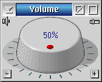
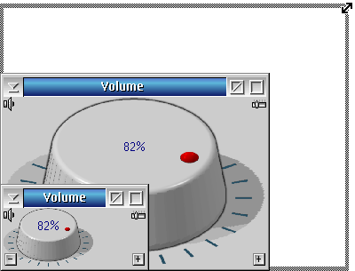
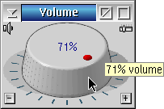

System Master Audio Volume
System Master Audio Volume
Adjust master volume of system
Copyright© 2020,
Jan-Erik LÑrka
http://www.xn-lrka-loa.com/
License agreement
License agreement
Copyright∏ 2020, Jan-Erik LÑrka
All rights reserved.
Redistribution and use in source and binary forms, with or without
modification,
are permitted provided that the following conditions are met:
1. Redistributions of source code must retain the above copyright
notice,
this list of conditions and the following disclaimer.
2. Redistributions in binary form must reproduce the above copyright
notice, this list of conditions and the following disclaimer in the
documentation
and/or other materials provided with the distribution.
3. Neither the name of "Jan-Erik LÑrka" nor the names of its
contributors
may be used to endorse or promote products derived from this software
without
specific prior written permission.
THIS SOFTWARE IS PROVIDED BY THE COPYRIGHT HOLDERS AND CONTRIBUTORS
"AS IS" AND ANY EXPRESS OR IMPLIED WARRANTIES, INCLUDING, BUT NOT
LIMITED
TO, THE IMPLIED WARRANTIES OF MERCHANTABILITY AND FITNESS FOR A
PARTICULAR
PURPOSE ARE DISCLAIMED. IN NO EVENT SHALL THE COPYRIGHT HOLDER OR
CONTRIBUTORS
BE LIABLE FOR ANY DIRECT, INDIRECT, INCIDENTAL, SPECIAL, EXEMPLARY, OR
CONSEQUENTIAL DAMAGES (INCLUDING, BUT NOT LIMITED TO, PROCUREMENT OF
SUBSTITUTE
GOODS OR SERVICES; LOSS OF USE, DATA, OR PROFITS; OR BUSINESS
INTERRUPTION)
HOWEVER CAUSED AND ON ANY THEORY OF LIABILITY, WHETHER IN CONTRACT,
STRICT
LIABILITY, OR TORT (INCLUDING NEGLIGENCE OR OTHERWISE) ARISING IN ANY
WAY
OUT OF THE USE OF THIS SOFTWARE, EVEN IF ADVISED OF THE POSSIBILITY OF
SUCH DAMAGE.
About
About
System Master Audio Volume
Version 1.0 build 1
The main purpose (beside world dominance ;-) of the application is to
-
Provide a flexible solution to adjust the master audio volume for
the whole system
-
Visually appealing appearance at a wide range of sizes
-
Contain a compact mode with maintained functionality
Thank you
-
Gabriele Gamba
and
eCSoft/2
(
https://ecsoft2.org
) for the excellent cooperation and the online software catalogue
-
RÅdiger Ihle
for your posting in the forum of OS/2 World about MASTERAUDIO
Installation
Prerequisites
OS/2 multimedia system with support for REXX
Installation
Unpack to a destination folder and create a Program object on the
desktop.
User interface - Overview
Overview

The application window consists of buttons to
but also show
-
percentage value
-
position indicator
Full mode
Full mode

The volume can be controlled with a
Mouse click on
-
buttons
-
sides of the knob
or the
The knob adapt the size to window size
A tooltip appear as the mouse pointer hoover over buttons and
the master audio volume control inform about the current setting or
what the button do.

Top Left
Master
Audio Volume is
active
to output sound
Master
Audio Volume has been
muted
and disable
,
and the
percentage text.
Top Right
Click to
switch to
compact mode
Bottom Left
Decrease
Master Audio Volume by 5 percent
Bottom Right
Increase
Master Audio Volume by 5 percent
Click + or RIGHT ARROW on the keyboard to increase the volume by 5 percent
Click - or LEFT ARROW on the keyboard to decrease the volume by 5 percent
Click on DEL, DELETE or BACKSPACE on the keyboard to toggle Mute Audio on/off
Compact mode
Compact mode
The application window consists of buttons to
mute
and switch
from compact mode
as well as show a percentage value indicator.
-
Adjust the volume with the mouse or the
keyboard
.
-
The slider adapt the width to the window.
-
Tooltip on buttons and the master audio volume control
Left
Master
Audio Volume is
active
to output sound
Master
Audio Volume has been
muted
Right
Click to
switch
from compact mode
Click + or RIGHT ARROW on the keyboard to increase the volume by 5 percent
Click - or LEFT ARROW on the keyboard to decrease the volume by 5 percent
Click on DEL, DELETE or BACKSPACE on the keyboard to toggle Mute Audio on/off
Keyboard
Keyboard
|
Key
|
Explenation
|
Usage
|
|
+ or →
|
Plus
Right arrow
|
Increase the volume by 5 percent
|
|
- or ←
|
Minus
Left arrow
|
Decrease the volume by 5 percent
|
DEL
BACKSPACE
|
Delete
Backspace
|
Toggle Mute Audio
|
|
_
|
Underscore
|
Toggle Compact mode
|
|
F1
|
First F key
|
Open this help
|
Related tools
Related tools
html2hlp.cmd (with html2hlp.add)
-
This help file was created with the help of a HTML-style file
that was parsed by html2hlp into a .ipf-file and compiled by ipfc.
Please note that you need to install the OS2TK45 (not only with yum) to
use ipfc.